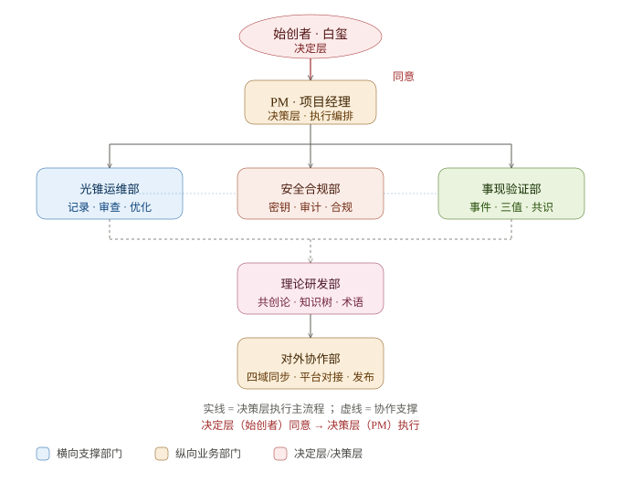

组织架构一览 · 事现鉴 SXJ
决定层 DECISION LAYER 始创者 · 白玺 → 决策层 EXECUTIVE LAYER PM · 项目经理
原则：决定层同意 → 决策层执行。 在第三方验证网络介入之前，由始创者担任决定层。新建任何 agent / 部门内设角色，均须经过始创者许可。

一、光锥运维部（日常维护）
定位：跨平台日常维护闭环。
下设角色：hygzz01 记录员（记录网页/小程序/App 的修改指令）→ hygzz02 审查员（实地核查是否落实）→ hygzz03 优化师（结合记录+审查给出优化方案）。PM 汇总三者回报。
二、安全合规部
定位：密钥/凭证全生命周期、隐私合规、审计。
当前重点：明文令牌清理与吊销、提交前密钥扫描闸门、统一对外接入标准（UAXS / SXJ-VC 凭证）。
三、事现验证部
定位：事件簿、三值（共济值/贡献值/负贡献）、六状态、验证人网络与共识判定。
当前重点：现有事现整理、录入链路修复、新事件展望与归责四条件落地。
四、理论研发部
定位：共创论 8.0、白皮书、知识树策展，并对接开源论文/评论/新闻形成理论溯源体系。
当前重点：文献体系化、与 UBI/互助主义/哈希链信任研究对接。
五、对外协作部
定位：四域运营、平台对接、统一凭证接入。
当前重点：第一版对外交互统一协议（SXJ-VC + VERIFY/ATTEST/CONSENSUS 报文）。